← Start Now! — Meditation and Spiritual Exercises
Working with the Dead
Learn this chapter through its own lessons, then compare the relevant source passages.
PDF 255–271 · 2 teaching lessons
Reading to and remembering the dead
Understand the proposed spiritual relationship and its preparation.
Verses of love, warmth and continuing connection
Choose a remembrance verse with its original circumstances visible.
Practice texts and source reader
These are selected source pages from this chapter, including its longer practice texts. The original English page is the reference for uncertain wording or layout. The OCR transcription may contain errors and is not a newly verified edition. Open a source image at full size to read its details.
Source PDF position 255 · English
Read the searchable source transcription
Working with the Dead
For many years, Rudolf Steiner gave out many meditations and practices to help those on Earth remain connected to those who have died. Practices include:
Reading to the dead:
It is clearly not a case of the dead understanding any particular human language—English, French, or Swahili. The essence of what is read must become living spiritual thinking in us. We must start with a spiritual text; we thoroughly ponder and make it our own; then, to the best of our ability, we, as it were, meditate it to the highest “meaning.” Then, emptying ourselves, we offer this experience to the spiritual world and, specifically, to our loved one who has died.
Remembering the dead:
In the first place, this means thinking of the dead, summoning them before us, with as much life and accuracy and as great and pure a love as we can muster. We must learn to love objectively, not out of personal need. The souls of the dead need nourishment, just as we need food. Thoughts filled with heart and love become food for those who have died. Steiner says that we are “books” for those who have gone over to the other side. They hunger for the spiritual knowledge we can gain only on Earth. Our memory of them is “art” for them. If we wish to communicate with them, a useful exercise to create them in memory and then, as selflessly and unegotistically as we can, enter into their image so totally that we become them.
Working with images and thoughts:
Those who have died sometimes appear to us as images—often not in their own likeness, but in the image of another person or thing. This image is, as it were, the gaze of the loved one upon us. We can also feel the individual’s presence and gaze as thoughts that come asSource PDF position 256 · English
Read the searchable source transcription
if by grace. We must try to become sensitive to the presence of this “other” in our thought life—for the dead wish to help in the work of earthly evolution.
Questioning those who have died:
This is best done last thing at night before falling asleep. As we go to sleep, we turn with a question, in pure love and deep feeling, to the one who passed away. The question is carried in the heart into sleep. Awaking the next morning, we pay close attention to the first thing in our consciousness. This answer will be in our own voice, not that of the other.
Steiner also spoke of certain preconditions:
- We must learn to understand that Earth is the place for creating connections and relationships that can be continued after
death. The meaning of the Earth is relationship.
+ We must learn to develop a moral disposition that acknowledges the unity and ultimate value of all human beings. This begins with developing an interest in and love for everyone we meet.
- We must learn to cultivate a feeling of devotion and reverence.
- We must always seek to unite with the presence of the ever-present universal spirit and thereby establish the common,
spiritual ground that the living and the dead share. We must learn to develop “inner quiet,” emptying ourselves and waiting for thoughts, feelings, and insights to arise from the soul’s depths. This is the “inward” side.” Outwardly, we must begin to pay attention to chance encounters and synchronicities—to the events around us.
+ We must seek to acquire a sense of “community,” or “solidarity,” with all life and all that exists. We must realize that we are part of the world; we leave our mark on all that we encounter and remain connected with everything we come into contact with. We are part of the web of Earth; we can no longer live for ourselves alone.Source PDF position 257 · English
Open the original source page at full size

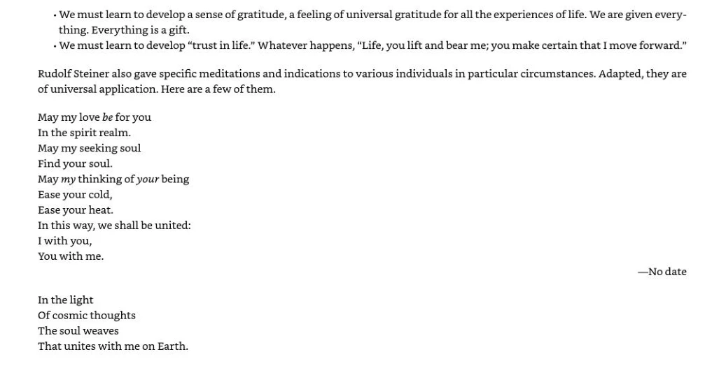
Read the searchable source transcription
- We must learn to develop a sense of gratitude, a feeling of universal gratitude for all the experiences of life. We are given everything. Everything is a gift.
+ We must learn to develop “trust in life.” Whatever happens, “Life, you lift and bear me; you make certain that I move forward.”
Rudolf Steiner also gave specific meditations and indications to various individuals in particular circumstances. Adapted, they are
of universal application. Here are a few of them.
May my love be for you
In the spirit realm.
May my seeking soul
Find your soul.
May my thinking of your being Ease your cold,
Ease your heat.
In this way, we shall be united:
I with you, You with me.
—No date
In the light
Of cosmic thoughts
The soul weaves
That unites with me on Earth.Source PDF position 258 · English
Open the original source page at full size

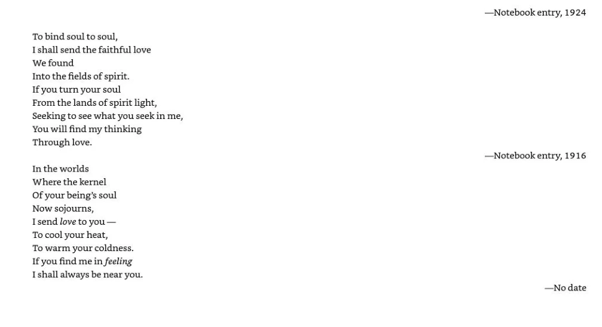
Read the searchable source transcription
To bind soul to soul,
I shall send the faithful love
We found
Into the fields of spirit.
If you turn your soul
From the lands of spirit light, Seeking to see what you seek in me, You will find my thinking
Through love.
In the worlds
Where the kernel
Of your being’s soul
Now sojourns,
I send love to you —
To cool your heat,
To warm your coldness. If you find me in feeling
I shall always be near you.
—Notebook entry, 1924
—Notebook entry, 1916
—No dateSource PDF position 259 · English
Open the original source page at full size

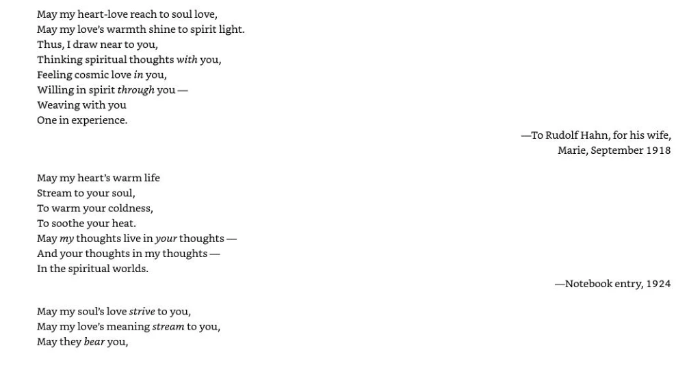
Read the searchable source transcription
May my heart-love reach to soul love,
May my love’s warmth shine to spirit light. Thus, I draw near to you,
Thinking spiritual thoughts with you, Feeling cosmic love in you,
Willing in spirit through you —
Weaving with you
One in experience.
May my heart’s warm life
Stream to your soul,
To warm your coldness,
To soothe your heat.
May my thoughts live in your thoughts — And your thoughts in my thoughts —
In the spiritual worlds.
May my soul's love strive to you, May my love’s meaning stream to you, May they bear you,
—To Rudolf Hahn, for his wife,
Marie, September 1918
—Notebook entry, 1924Source PDF position 260 · English
Open the original source page at full size

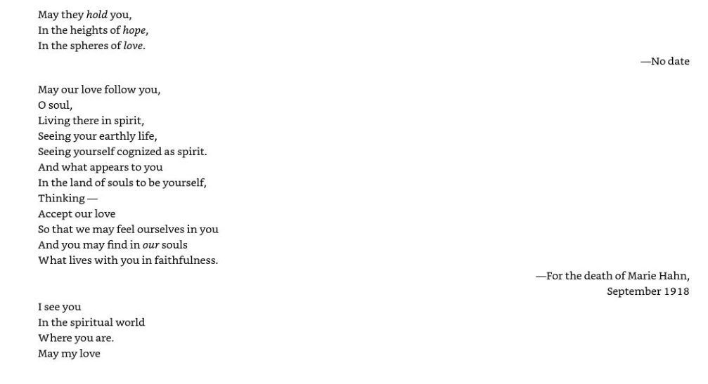
Read the searchable source transcription
May they hold you, In the heights of hope, In the spheres of love.
May our love follow you, Osoul, Living there in spirit, Seeing your earthly life, Seeing yourself cognized as spirit. And what appears to you In the land of souls to be yourself, Thinking — Accept our love So that we may feel ourselves in you And you may find in our souls What lives with you in faithfulness.
Isee you In the spiritual world Where you are. May my love
—No date
—For the death of Marie Hahn,
September 1918Source PDF position 261 · English
Open the original source page at full size

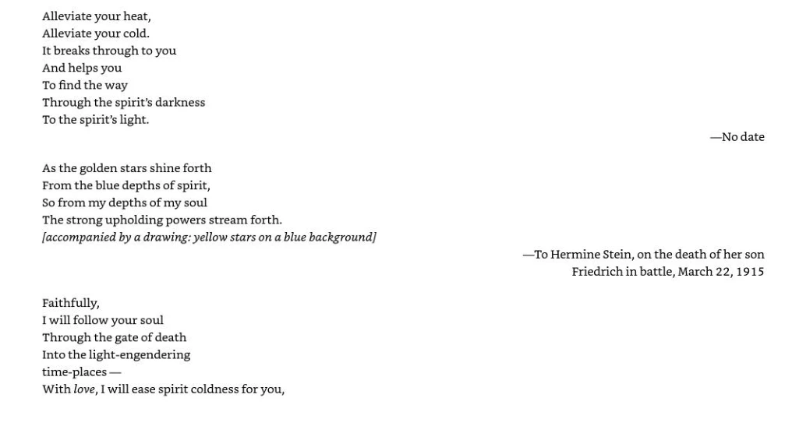
Read the searchable source transcription
Alleviate your heat,
Alleviate your cold.
It breaks through to you
And helps you
To find the way
Through the spirit’s darkness To the spirit’s light.
As the golden stars shine forth
From the blue depths of spirit,
So from my depths of my soul
The strong upholding powers stream forth.
[accompanied by a drawing: yellow stars on a blue background]
Faithfully,
I will follow your soul
Through the gate of death
Into the light-engendering
time-places —
With love, I will ease spirit coldness for you,
—No date
—To Hermine Stein, on the death of her son
Friedrich in battle, March 22, 1915Source PDF position 262 · English
Open the original source page at full size

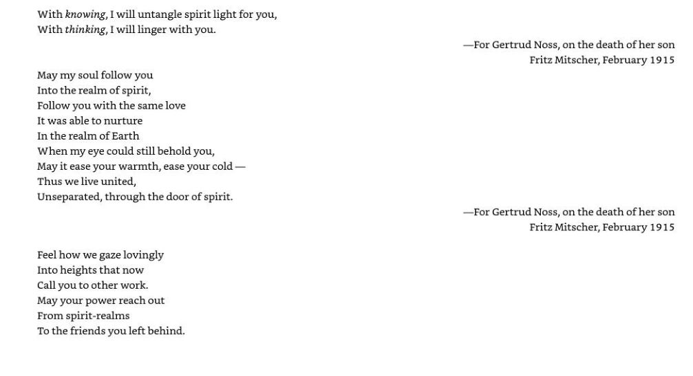
Read the searchable source transcription
With knowing, I will untangle spirit light for you, With thinking, | will linger with you.
May my soul follow you
Into the realm of spirit,
Follow you with the same love
It was able to nurture
In the realm of Earth
When my eye could still behold you,
May it ease your warmth, ease your cold — Thus we live united,
Unseparated, through the door of spirit.
Feel how we gaze lovingly Into heights that now
Call you to other work.
May your power reach out From spirit-realms
To the friends you left behind.
—For Gertrud Noss, on the death of her son
Fritz Mitscher, February 1915
—For Gertrud Noss, on the death of her son
Fritz Mitscher, February 1915Source PDF position 263 · English
Open the original source page at full size

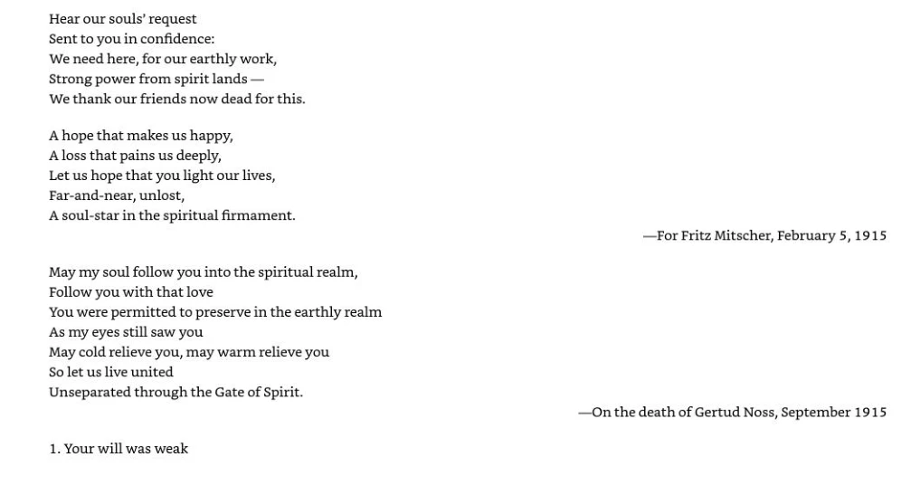
Read the searchable source transcription
Hear our souls’ request
Sent to you in confidence:
We need here, for our earthly work, Strong power from spirit lands —
We thank our friends now dead for this.
A hope that makes us happy, A loss that pains us deeply, Let us hope that you light our lives, Far-and-near, unlost, A soul-star in the spiritual firmament.
May my soul follow you into the spiritual realm, Follow you with that love You were permitted to preserve in the earthly realm As my eyes still saw you May cold relieve you, may warm relieve you So let us live united
Unseparated through the Gate of Spirit.
1. Your will was weak
—For Fritz Mitscher, February 5, 1915
—On the death of Gertud Noss, September 1915Source PDF position 264 · English
Open the original source page at full size

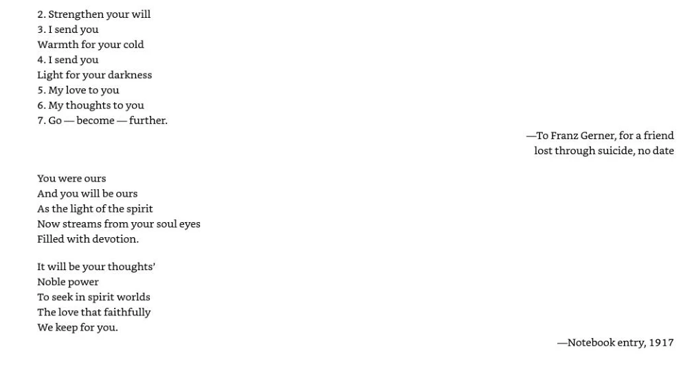
Read the searchable source transcription
2. Strengthen your will
3.1send you
Warmth for your cold
4.1 send you
Light for your darkness
5. My love to you
6. My thoughts to you
7. Go — become — further.
You were ours
And you will be ours
As the light of the spirit
Now streams from your soul eyes Filled with devotion.
It will be your thoughts’ Noble power
To seek in spirit worlds The love that faithfully We keep for you.
—To Franz Gerner, for a friend lost through suicide, no date
—Notebook entry, 1917Source PDF position 265 · English
Open the original source page at full size

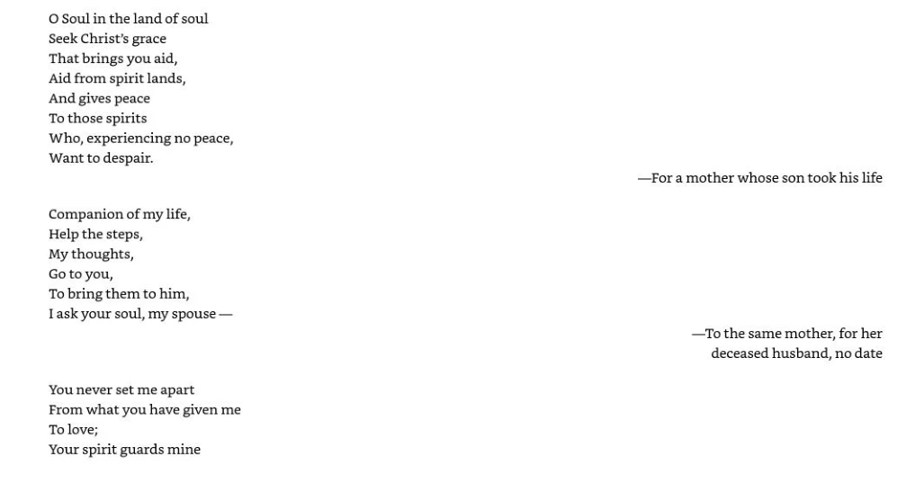
Read the searchable source transcription
O Soul in the land of soul
Seek Christ’s grace
That brings you aid,
Aid from spirit lands,
And gives peace
To those spirits
Who, experiencing no peace, Want to despair.
Companion of my life,
Help the steps,
My thoughts,
Go to you,
To bring them to him,
I ask your soul, my spouse —
You never set me apart
From what you have given me To love;
Your spirit guards mine
—For a mother whose son took his life
—To the same mother, for her deceased husband, no dateSource PDF position 266 · English
Open the original source page at full size

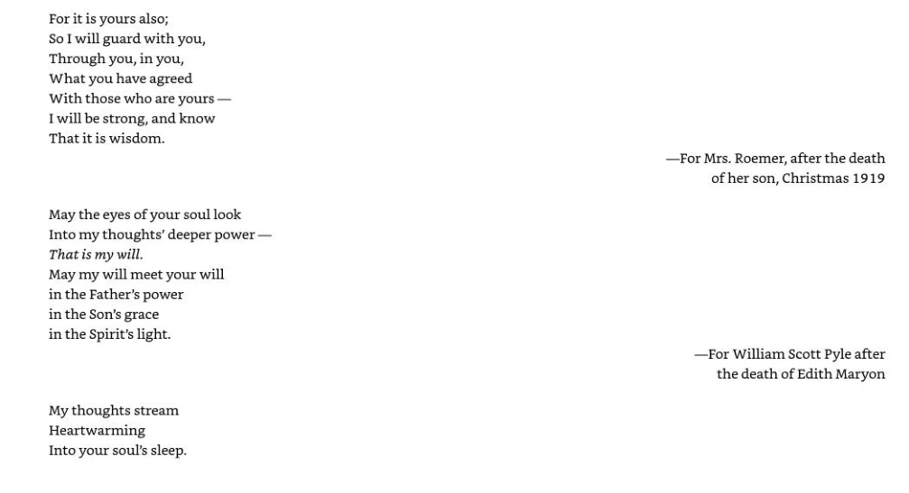
Read the searchable source transcription
For it is yours also;
So I will guard with you, Through you, in you,
What you have agreed
With those who are yours — I will be strong, and know That it is wisdom.
May the eyes of your soul look
Into my thoughts’ deeper power — That is my will.
May my will meet your will
in the Father’s power
in the Son's grace
in the Spirit’s light.
My thoughts stream Heartwarming Into your soul’s sleep.
—For Mrs. Roemer, after the death
of her son, Christmas 1919
—For William Scott Pyle after the death of Edith MaryonSource PDF position 267 · English
Open the original source page at full size

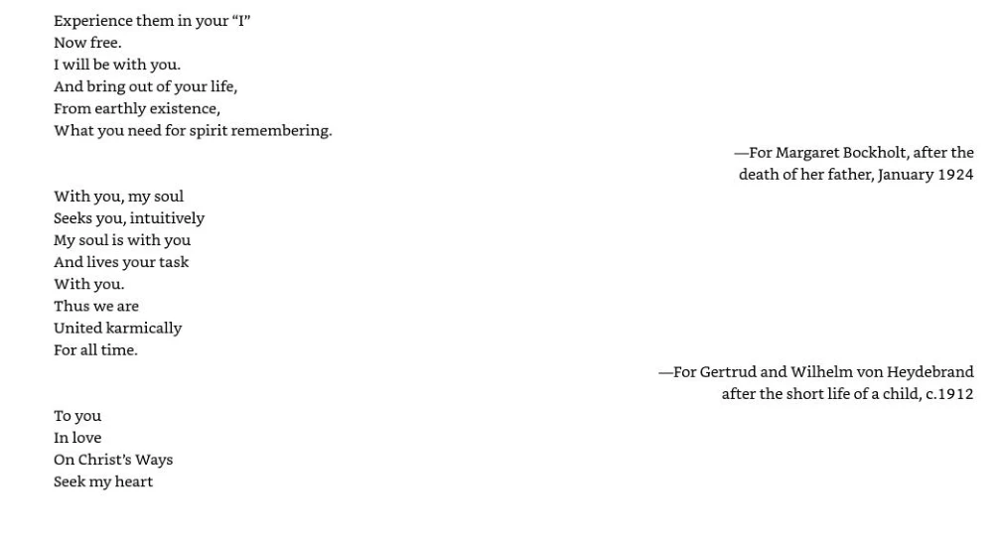
Read the searchable source transcription
Experience them in your “I” Now free.
I will be with you.
And bring out of your life, From earthly existence,
What you need for spirit remembering.
With you, my soul Seeks you, intuitively My soul is with you And lives your task With you.
Thus we are
United karmically For all time.
To you
In love
On Christ’s Ways Seek my heart
—For Margaret Bockholt, after the death of her father, January 1924
—For Gertrud and Wilhelm von Heydebrand
after the short life of a child, c.1912Source PDF position 268 · English
Open the original source page at full size

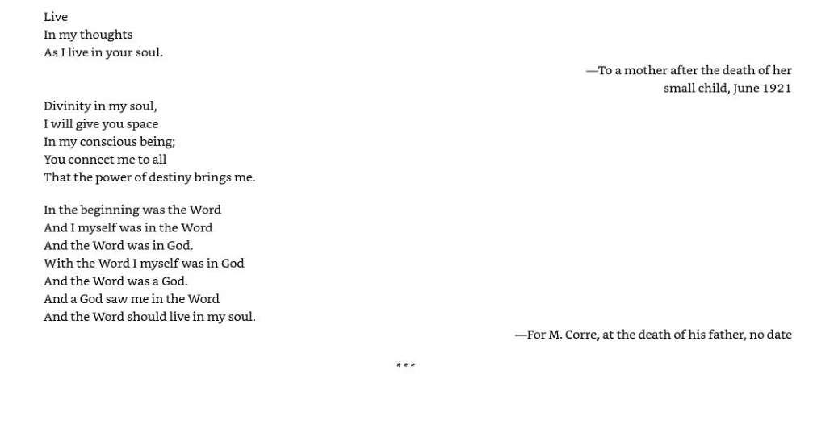
Read the searchable source transcription
Live
In my thoughts As | live in your soul.
Divinity in my soul,
I will give you space
In my conscious being;
You connect me to all
That the power of destiny brings me.
In the beginning was the Word
And I myself was in the Word
And the Word was in God.
With the Word I myself was in God And the Word was a God.
And a God saw me in the Word
And the Word should live in my soul.
eee
—To a mother after the death of her
small child, June 1921
—For M. Corre, at the death of his father, no dateSource PDF position 269 · English
Open the original source page at full size

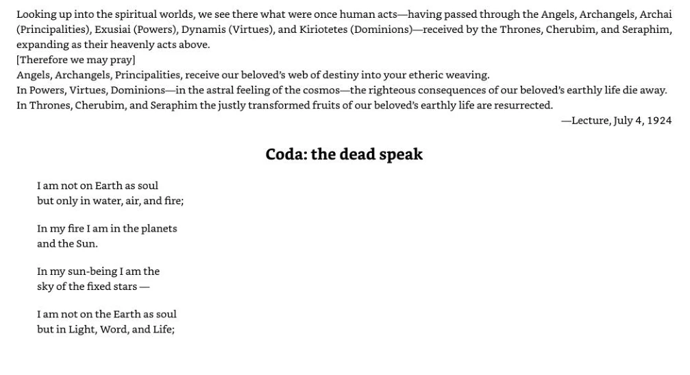
Read the searchable source transcription
Looking up into the spiritual worlds, we see there what were once human acts—having passed through the Angels, Archangels, Archai (Principalities), Exusiai (Powers), Dynamis (Virtues), and Kiriotetes (Dominions)—received by the Thrones, Cherubim, and Seraphim, expanding as their heavenly acts above. [Therefore we may pray] Angels, Archangels, Principalities, receive our beloved’s web of destiny into your etheric weaving. In Powers, Virtues, Dominions—in the astral feeling of the cosmos—the righteous consequences of our beloved’s earthly life die away. In Thrones, Cherubim, and Seraphim the justly transformed fruits of our beloved’s earthly life are resurrected.
—Lecture, July 4, 1924
Iam not on Earth as soul
but only in water, air, and fire;
In my fire I am in the planets and the Sun.
In my sun-being I am the sky of the fixed stars —
Iam not on the Earth as soul
but in Light, Word, and Life;
## Coda: the dead speakSource PDF position 270 · English
Open the original source page at full size

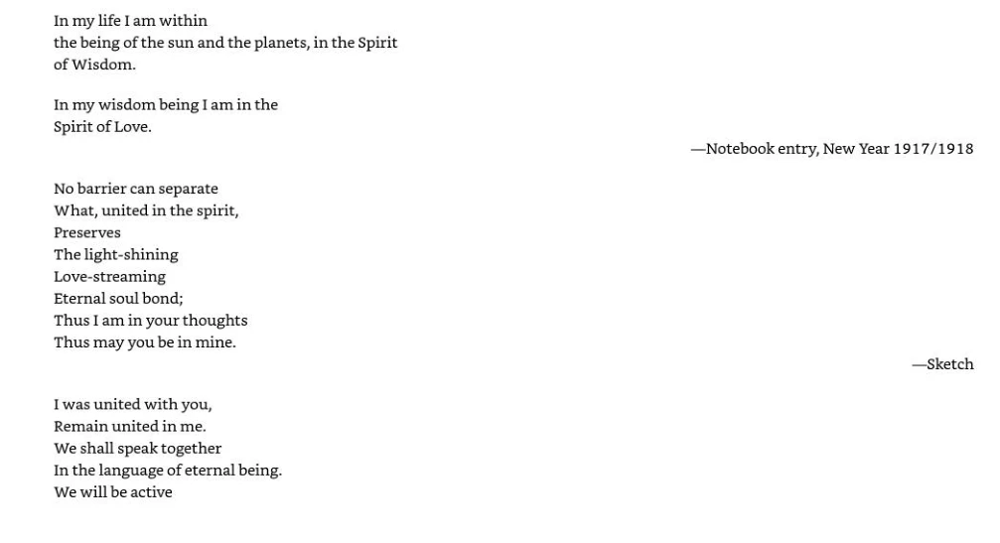
Read the searchable source transcription
In my life lam within the being of the sun and the planets, in the Spirit of Wisdom.
In my wisdom being I am in the Spirit of Love.
No barrier can separate What, united in the spirit, Preserves
The light-shining Love-streaming Eternal soul bond; Thus I am in your thoughts Thus may you be in mine.
I was united with you,
Remain united in me.
We shall speak together
In the language of eternal being. We will be active
—Notebook entry, New Year 1917/1918
—SketchSource PDF position 271 · English
Open the original source page at full size

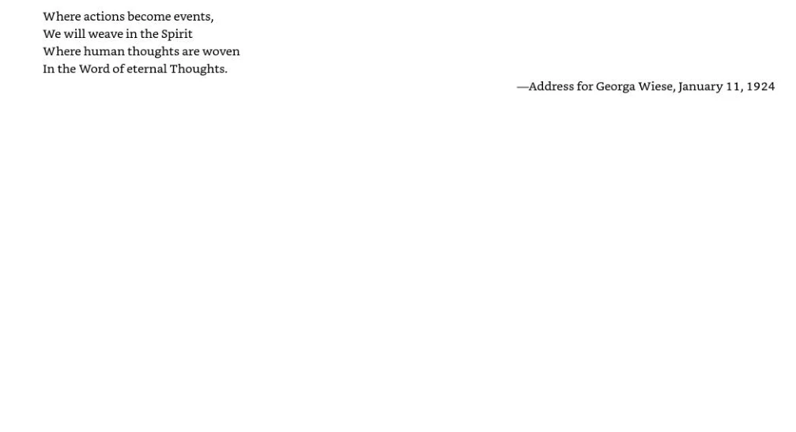
Read the searchable source transcription
Where actions become events, We will weave in the Spirit Where human thoughts are woven In the Word of eternal Thoughts.
—Address for Georga Wiese, January 11, 1924